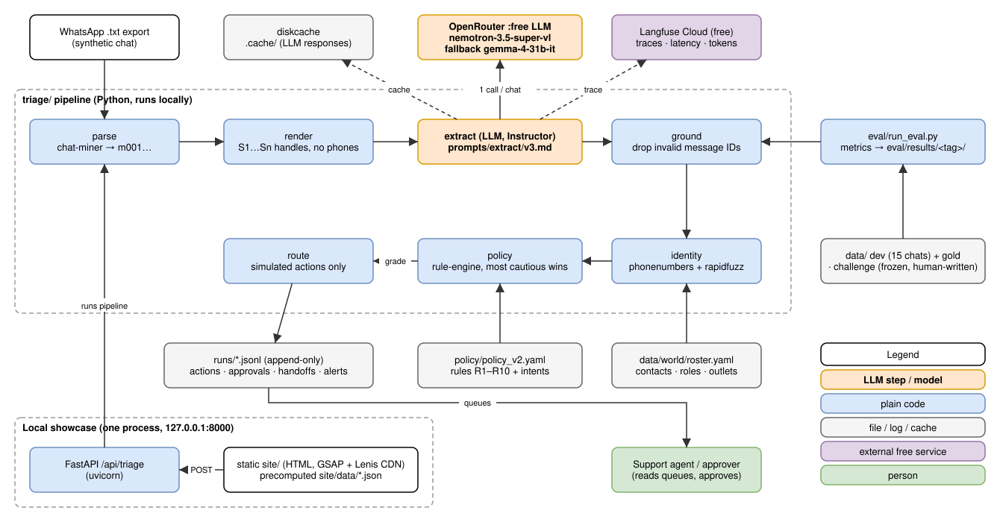

Watch it work
Two chats from the dev set, run through the real pipeline. Scroll, and each stage happens on the desk.
Partner WhatsApp groups bury a few real requests, and now and then a fake bank-detail change, under dozens of good-mornings.
The Triage Desk pulls out each request, checks the sender against the roster and stamps what may happen next. It executes nothing.
Two chats from the dev set, run through the real pipeline. Scroll, and each stage happens on the desk.

docs/architecture.drawio.svg.Hover or focus a rule to see where it matched in the desk below.
| Rule | When | Stamp |
|---|
Precomputed runs of five dev chats. Choose one, then open any request to see each step.
Paste or upload an Android WhatsApp export (.txt). The local API runs the real pipeline on it.
| Metric | Value | Target |
|---|